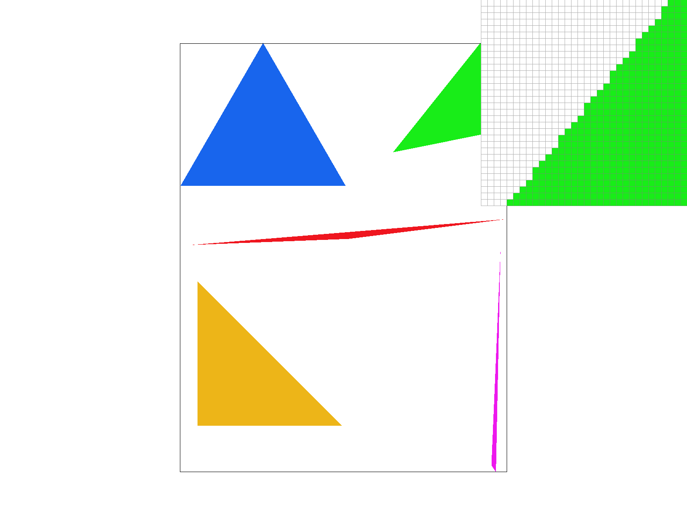
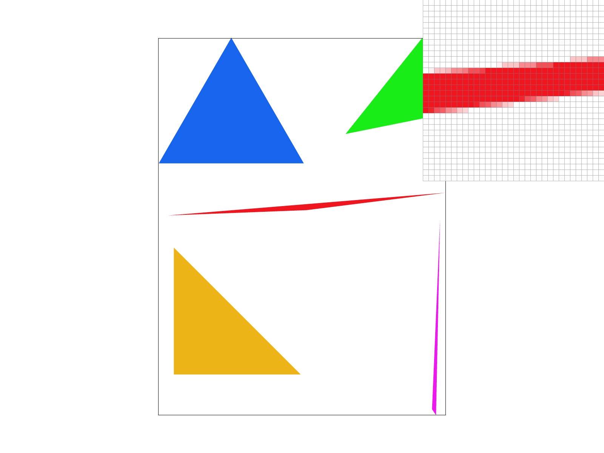
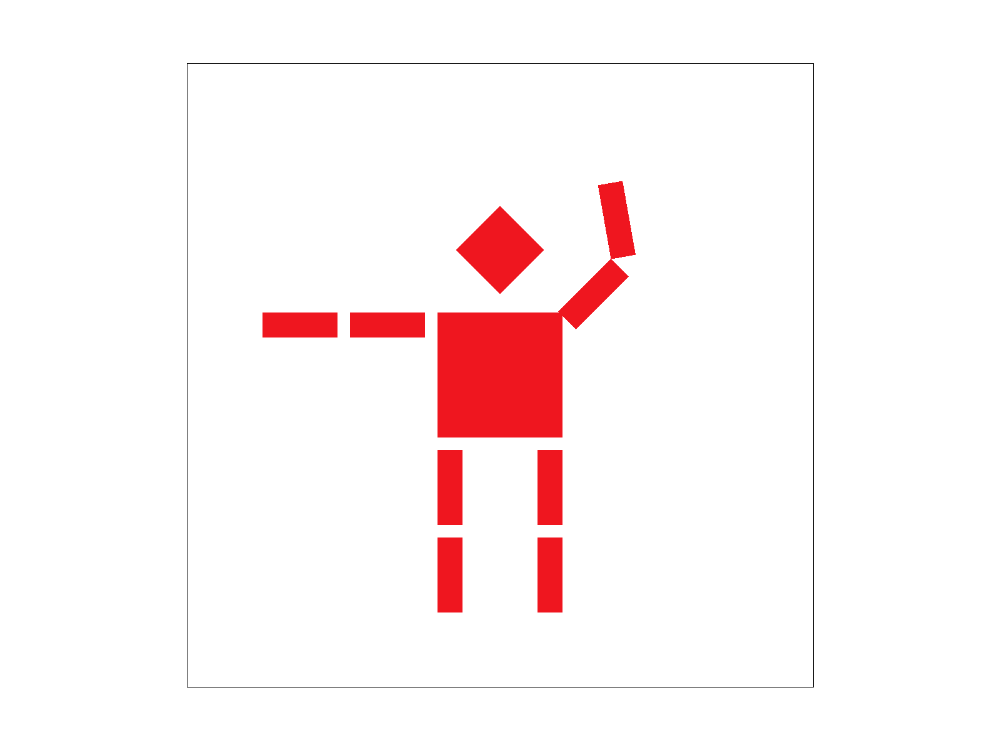
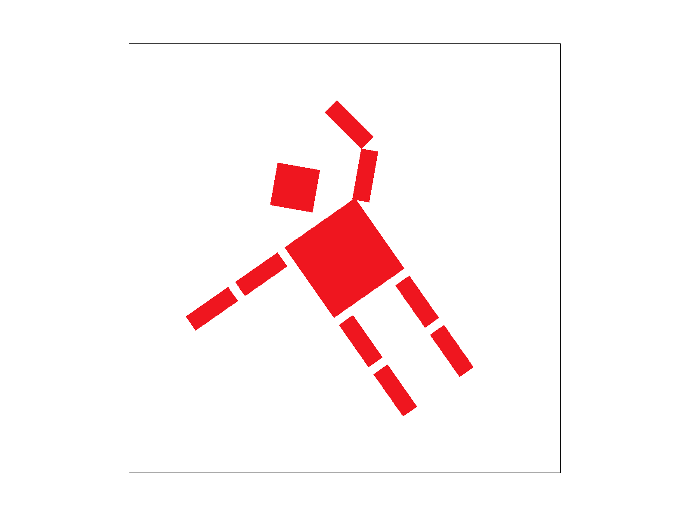
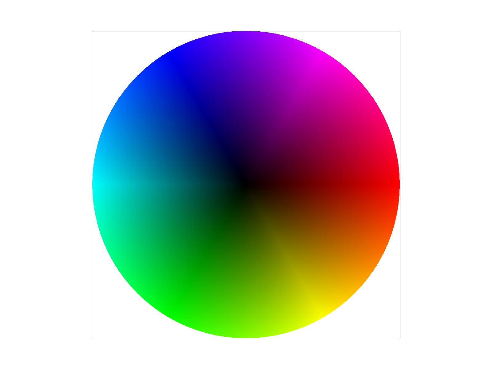
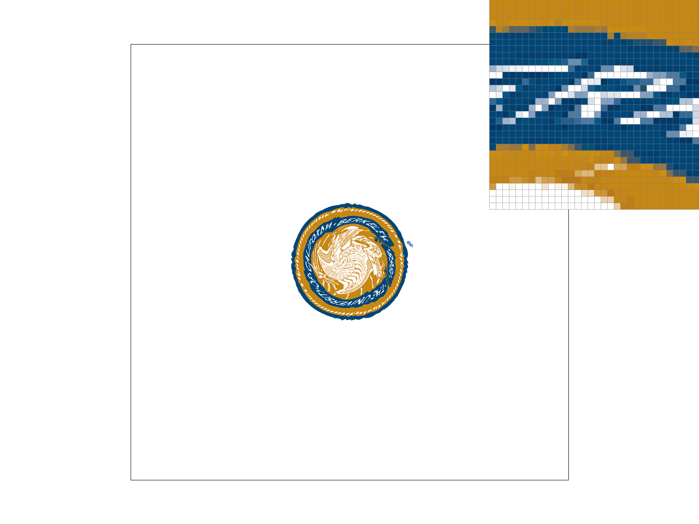
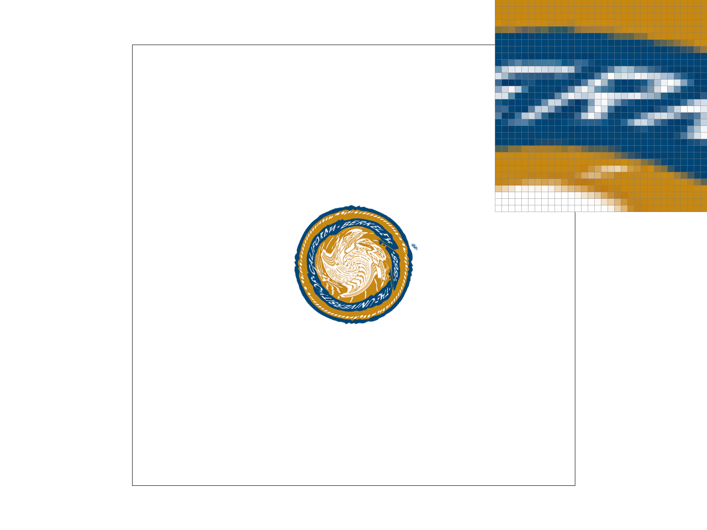
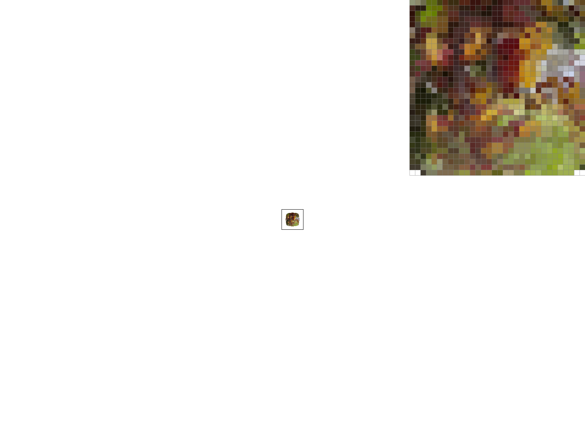

CS184/284A Fall 2026 Homework 1 Write-Up
Link to webpage: https://cal-cs184-student.github.io/hw1-kxchier-hw1-writeup/
Link to GitHub repository: https://github.com/cal-cs184-student/hw1-kxchier-hw1-writeup
Overview
In this homework, I built a software rasterization pipeline that transforms SVG geometry into screen space, rasterizes triangles, antialiases them through supersampling, interpolates vertex attributes with barycentric coordinates, and maps textures using nearest, bilinear, and mipmap level sampling. I found it interesting that the same triangle traversal and barycentric weights could support solid colors, gradients, and textures. I also learned that supersampling, pixel filtering, and mipmapping address different sources of aliasing. One challenge was preventing small seams between neighboring interpolated triangles due to floating-point error, which I addressed by including a small tolerance in the edge tests.
Task 1: Drawing Single-Color Triangles
To rasterize a triangle, I first compute its bounding box using the minimum and maximum x- and y-coordinates of its three vertices. I then use nested for loops to go through every pixel in this bounding box, sampling each pixel at its center. For each sample, I compute the cross product between every directed edge vector and the vector from that edge's starting vertex to the sample point. If all three cross products are nonnegative or all three are nonpositive, I fill the pixel.
The algorithm examines only the pixels inside the triangle's smallest bounding box so if the bounding box has width (w) and height (h), the nested loops visit at most (wh) samples. Each sample is visited once and requires a constant number of edge tests, giving the algorithm a running time of O(wh).

basic/test4.svg with the default viewing parameters.Extra Credit: Incremental Edge Evaluation
My original implementation recomputed three complete cross products at every pixel. I optimized it by rewriting each edge test as \(E(x,y)=Ax+By+C\) and computing its coefficients once. Because adjacent pixel centers are one unit apart, moving right updates an edge value by adding \(A\), while moving down one row updates it by adding \(B\). This replaces repeated multiplication with simpler additions while preserving the same triangle coverage and winding test.
I timed repeated renders of basic/test4.svg by placing a timer around svg.draw() and comparing median times. The optimization reduced the median from 0.810 ms to 0.609 ms, a 24.8% reduction.
| Method | Median render time | Reduction |
|---|---|---|
| Original edge evaluation | 0.810 ms | — |
| Incremental edge evaluation | 0.609 ms | 24.8% |
Task 2: Antialiasing by Supersampling
I implemented supersampling by dividing each pixel into a sqrt(sample_rate) × sqrt(sample_rate) grid and testing each subsample against the triangle edges. I used sample_buffer, a vector of Color objects sized width * height * sample_rate, to store the results and updated its size whenever the framebuffer or sample rate changed. Covered triangle subsamples are colored individually, while fill_pixel() colors all subsamples for points and lines. Finally, resolve_to_framebuffer() averages each pixel's subsamples into one framebuffer color. This partial-coverage information smooths diagonal edges and preserves thin features that a single center sample might miss.
| | |  |
At rate 1, pixels are either fully colored or white, producing jagged edges and gaps in skinny triangles. Rates 4 and 16 test more locations within each pixel, so partially covered pixels receive averaged colors. As the sample rate increases, the edge becomes smoother and the thin triangle appears more continuous.
Task 3: Transforms
I modified Cubeman into a waving position by rotating his upper right arm around the shoulder and his forearm around the elbow. I used nested transformations so that each arm segment rotates around its corresponding joint. The modified SVG is available here.
{kind=link}

Extra Credit: Viewport Rotation
I added keyboard controls that rotate the viewport clockwise and counterclockwise. I constructed the rotation in NDC space by translating the viewport center to the origin, rotating it, and translating it back. I inserted this matrix between svg_to_ndc and ndc_to_screen, forming ndc_to_screen * viewport_rotation * svg_to_ndc. This rotates the complete SVG around the center of the viewport before mapping it to screen coordinates.

Task 4: Barycentric coordinates
Barycentric coordinates describe a point inside a triangle using three weights, \(\alpha\), \(\beta\), and \(\gamma\), which sum to one. Each weight is the area of the subtriangle opposite its vertex divided by the area of the complete triangle. A weight equals one at its vertex and decreases to zero along the opposite edge. I use these weights to interpolate the vertex colors as \(C=\alpha C_0+\beta C_1+\gamma C_2\).


basic/test7.svg with default viewing parameters and sample rate 1. Barycentric interpolation blends the colors within each triangle to form a continuous color wheel.Task 5: "Pixel sampling" for texture mapping
Pixel sampling determines the texture color assigned inside a triangle. I first used barycentric coordinates to interpolate the vertices' (u,v) texture coordinates, then passed the resulting position and selected sampling method to Texture::sample(). Nearest sampling returns the single closest e, while bilinear sampling blends the four surrounding texels according to their distances from the texture position.
|  |  |
| | |
In the pixel inspector, nearest sampling produces abrupt, blocky transitions, while bilinear sampling introduces intermediate colors that make edges appear smoother. Increasing the sample rate further reduces jagged triangle boundaries by averaging more samples per output pixel. The difference between nearest and bilinear is greatest around high-contrast details and when texture coordinates fall between texel centers, especially when a texture is enlarged.
Task 6: "Level Sampling" with mipmaps for texture mapping
Level sampling selects a texture resolution based on how many texels are covered by one screen pixel. I estimated this footprint by interpolating the texture coordinates at (x,y), (x+1,y), and (x,y+1). After scaling their differences by the full texture dimensions, I used the larger differential length to calculate the level with log2(). L_ZERO always uses the full-resolution texture, L_NEAREST selects the closest mipmap level, and L_LINEAR blends samples from the two surrounding levels.
L_ZERO and P_NEAREST | L_ZERO and P_LINEAR |
 L_NEAREST and P_NEAREST | L_NEAREST and P_LINEAR |
Nearest pixel sampling is fastest because it reads one texel, while bilinear sampling reads and blends four texels for smoother transitions. Level sampling reduces aliasing during minification by using a prefiltered texture resolution, but storing the mipmap requires additional memory. Supersampling reduces aliasing in both geometry and textures, but its rendering time and sample-buffer memory grow with the sample rate. Therefore, pixel sampling controls how nearby texels are filtered, level sampling handles the scale of the texture, and supersampling improves the overall sampling of each screen pixel.
In the comparisons, the level-zero results preserve more sharp detail but show more noise and aliasing along the small flowers and thin stems. Nearest-level sampling uses a lower-resolution, prefiltered mipmap and produces a smoother, more stable result when the texture is minified. Within either level choice, bilinear sampling further softens blocky transitions by blending neighboring texels.